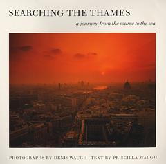

|  |
Photographs copyright ©1999 by Denis Waugh
Hardback, 180 pages
List price £30.00, USA $50.00
Click here to order a copy. You can see the list of contents and see some sample chapters on this website. |
This beautiful book is a loving and lavish portrait of a river so rich in history that, of its two-hundred-mile course, there is barely a mile that has not had a part to play in the story of England over the past two thousand years.
In over eighty stunning photographs which trace the Thames from its source in the gentle Gloucestershire countryside to the wide marshland skies of its estuary, Denis Waugh has captured the very spirit of the river. Here are the familiar highlights: Oxford, the tree-lined reaches and great houses of the middle Thames, the palaces and bridges of the capital, Westminster and its Abbey, the Pool of London, the glass-clad monoliths of Docklands and the awesome Thames Barrier. But here, too, are scenes that few tourists have ever discovered, places once famous from reasons long forgotten, the sites of battles, the remnants of vanished industries, fragments of the riverside that have, miraculously, survived more or less as they must have been when Edmund Spenser wrote his Faerie Queene, with its haunting refrain: `Sweet Thames, run softly till I end my song.'
The text by Priscilla Waugh that accompanies each photograph describes her own exploration of the Thames; an exploration that took her, together with her trusty bicycle, into overgrown footpaths and derelict industrial sites in search of the river's past. Writing with affection and enthusiasm, learning lightly worn, a sharp eye for the telling detail and a gently humorous touch, she evokes for the reader the echoes of history that can still be heard in these places, by those who have the patience and the imagination to listen for them.
This is an exceptional book. The pictures are the work of an artist whose camera can capture, like few others, the essence of a place, a time, a light, a mood. The accompanying text is a mine of information for those who wish to explore the river for themselves and to learn something of its long and fascinating history. For his fellow photographers, Denis Waugh has provided an Appendix giving technical information relating to the production of each photograph.